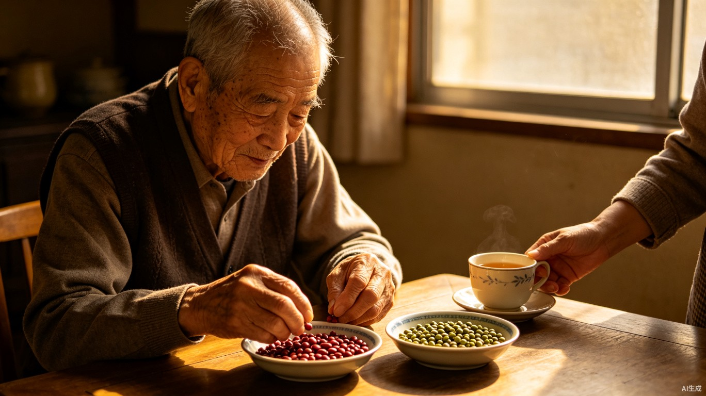
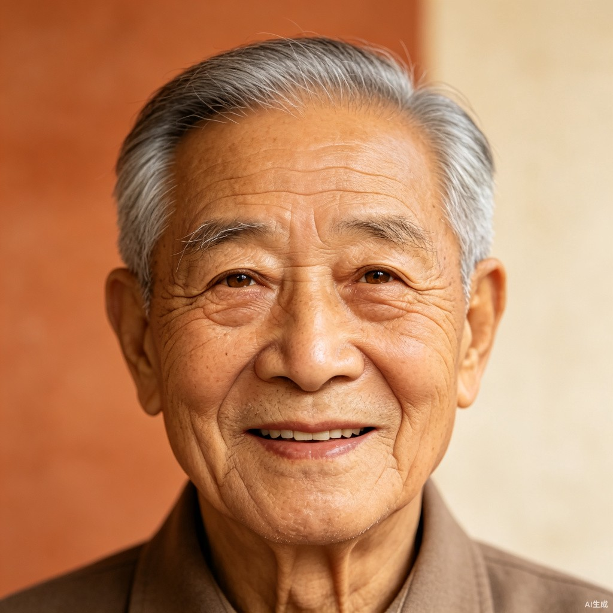

AI 仅推送异常条目，日常高置信度记录自动入库。
| 时间 | 老人 | 摘要 | 状态 | 操作 |
|---|---|---|---|---|
| 07-12 14:30 | 张建国 | 下午焦躁，分拣红豆绿豆后平复 | 需关注 | |
| 07-12 10:15 | 王淑芬 | 早餐拒食，触觉安抚后进食少量 | 需关注 | |
| 07-11 16:00 | 陈大明 | 主动给其他老人讲拖拉机故事 | 亮点 |

情绪波动频率逐渐降低，照护方案见效
下午 14-16 时高发，已针对性安排手工任务
系统上线 8 周，护理员使用习惯逐渐养成
六大模块采集占比
近 8 周各楼层采集数据量